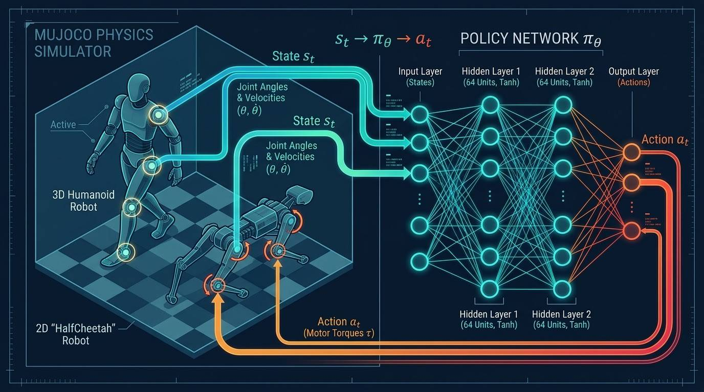
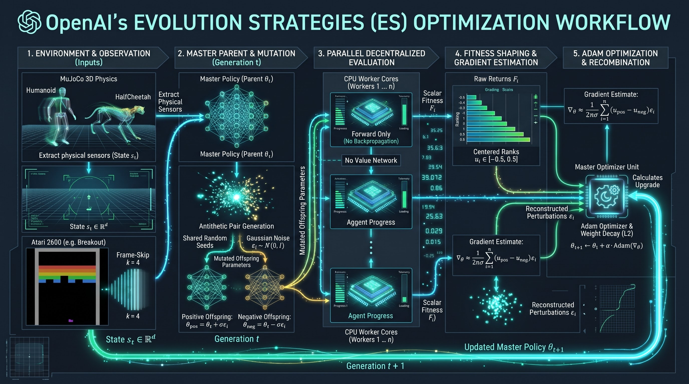
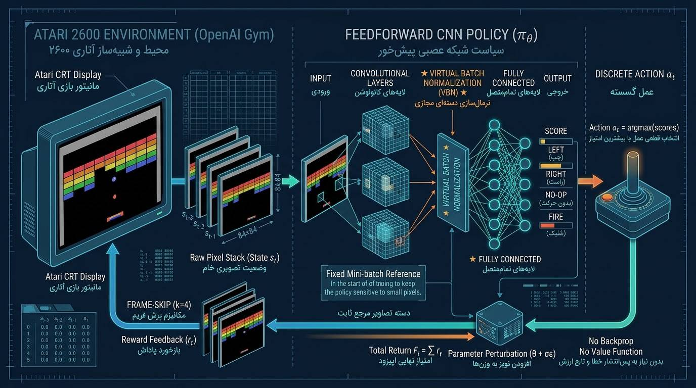

Notation Cheat-Sheet
Every symbol used in this curriculum, with the section of the paper where it appears. Keep this table in mind as you read; later modules never introduce a symbol without re-defining it.
| Symbol | Type | Meaning | Paper |
|---|---|---|---|
| $\theta$ | vector in $\mathbb{R}^d$ | All policy weights and biases, flattened. In Section 2 it is also the mean of the search distribution. | §2 |
| $d$ | integer | Number of parameters (dimension of $\theta$). | §3.2 |
| $t$ | integer | Generation counter in Algorithms 1 and 2; inside an episode, the time step. Context always disambiguates. | §2 |
| $n$ | integer | Population size: number of perturbations (or workers) per generation. | Alg. 1–2 |
| $\sigma$ | scalar $>0$ | Noise standard deviation; a fixed hyperparameter (not adapted). | §2.1 |
| $\epsilon_i$ | vector in $\mathbb{R}^d$ | $i$-th noise vector, $\epsilon_i \sim \mathcal{N}(0, I)$. | Alg. 1 |
| $\alpha$ | scalar $>0$ | Learning rate (step size). | Alg. 1 |
| $F(\cdot)$, $F_i$ | scalar | Stochastic episode return (fitness). $F_i = F(\theta_t + \sigma\epsilon_i)$. | §2 |
| $u_i$ | scalar in $[-\tfrac12, \tfrac12]$ | Centered-rank (fitness-shaped) version of $F_i$. | §2.1 |
| $\psi$, $p_\psi(\theta)$ | parameters, density | Parameters and density of the search distribution (the "probability cloud"). | §2 |
| $\pi_\theta$, $s_t$, $a_t$ | policy, state, action | Policy network, observed state, chosen action: $a_t = \pi(s_t;\theta)$. | §2, §3 |
| $T$ | integer | Episode length (number of decision steps). | §3.1 |
| $\bar{L}$, $m$ | integers | Mean episode length, and the episode-length cap (set near $2\bar{L}$). | §2.1 |
| $\xi$ | vector in $\mathbb{R}^d$ | Parameter noise in Section 3 notation: $\xi = \sigma\epsilon$. | §3 |
| $\Phi$, $\varphi$ | functions | Standard normal CDF and PDF (used in worked examples; not in the paper). | — |
Level Zero: Agents, Environments & The Biological Intuition Paper §1–§2
Imagine teaching a robot cheetah to run or teaching a computer to play Atari Pong. In Reinforcement Learning (RL), two entities interact in a closed loop from time step $t = 1$ to the end of an episode at $t = T$:
- The Agent (Policy Network $\pi_\theta$): The "brain" making decisions. It is a neural network controlled by a list of tunable numbers (weights and biases) denoted by $\theta$ (theta).
- The Environment: The physics simulator (such as MuJoCo) or video-game emulator (such as Atari).
At every moment $t$, the environment shows the agent the current State ($s_t$) (joint angles of the robot, or pixel frames on screen). The network processes $s_t$ using its weights and outputs an Action ($a_t = \pi(s_t; \theta)$) (how much torque to apply to each motor). At the end of the episode the environment yields a single scalar called the Total Return or Fitness ($F(\theta)$)—the sum of all rewards collected during the episode.
$F(\theta)$ is neither an action nor a single-step reward—it is the Total Episode Return (Fitness). You feed a complete parameter vector $\theta$ into $F(\cdot)$, the agent plays an entire episode from start to finish, and $F(\theta)$ returns one scalar (e.g., $+3150.4$). The actions $a_t$ may be discrete (one of 4 joystick buttons in Atari) or continuous (real-valued motor torques like $+0.732$ in MuJoCo); the paper handles both. Because the environment (and possibly the policy) is stochastic, the paper describes $F(\cdot)$ as the stochastic return: calling it twice with the same $\theta$ can give different numbers, and ES simply averages over that randomness.
Where is "Evolution" in Evolution Strategies? (One Parent, Many Offspring)
The paper describes ES as heuristic search procedures inspired by natural evolution: at every generation a population of parameter vectors ("genotypes") is perturbed ("mutated"), their objective values ("fitness") are evaluated, and the highest scoring vectors are recombined to form the next population. In OpenAI's ES, there is only ONE single parent parameter vector ($\theta_t$) at each generation $t$; the "population" is a cloud of mutated copies of it. Here is the dictionary mapping Darwinian biology to the paper's mathematics:
| Biological Concept | Mathematical Symbol | Meaning in OpenAI's Evolution Strategies |
|---|---|---|
| Genotype (DNA) | $\theta \in \mathbb{R}^d$ | The flat vector containing all $d$ weights and biases of the neural network. |
| Generation Counter | $t = 0, 1, 2, \dots$ | One iteration of the main training loop. |
| The Single Parent | $\theta_t$ | The master parameter vector at the start of generation $t$ (the mean of the Gaussian cloud). |
| Genetic Mutation | $+\sigma \epsilon_i$, $\epsilon_i \sim \mathcal{N}(0, I)$ | Random Gaussian noise added to the parent's weights to create variation. |
| Offspring Population | $\tilde{\theta}_i = \theta_t + \sigma \epsilon_i$ ($i=1\dots n$) | $n$ perturbed copies of the parent, each tested in its own episode (in parallel). |
| Fitness Score | $F_i = F(\theta_t + \sigma \epsilon_i)$ | The total episode return achieved by the $i$-th offspring. |
| Selection | weights $F_i$ (or $u_i$) | A soft selection: no offspring is discarded; each contributes in proportion to its (shaped) fitness, and below-average ones contribute negatively. |
| Recombination | $\theta_{t+1} \leftarrow \theta_t + \frac{\alpha}{n\sigma}\sum_{i=1}^n F_i \epsilon_i$ | Fitness-weighted combination of all offspring perturbations forms the next generation's parent (Algorithm 1, line 5). |
Visualizing the Agent-Environment Loop: Continuous Robotics (MuJoCo)
Before looking at how hundreds of networks evolve across generations, let us look inside a single episode rollout to see what data enters the neural network and what comes out. In continuous physics control tasks like MuJoCo, the network acts as a closed-loop controller mapping physical sensor readings to motor torques. The paper uses multilayer perceptrons with two 64-unit hidden layers separated by $\tanh$ nonlinearities (Section 4.1):
Blueprint 1.1 — MuJoCo Physics Simulator & MLP Policy Network ($\pi_\theta$)
Continuous Control: s_t → π_θ → a_t
1. Physics State Extraction ($s_t$)
At each time step, the MuJoCo simulator extracts continuous physical measurements from the robot (such as the 3D Humanoid or 2D HalfCheetah)—joint angles and angular velocities $(\theta, \dot{\theta})$—and sends them as state vector $s_t$.
2. Feedforward MLP ($\pi_\theta$)
The state vector $s_t$ enters the input layer and passes through two fully connected hidden layers of $64$ units each with smooth $\tanh$ nonlinearities, parameterized by the flat weight vector $\theta$.
3. Motor Torque Actuation ($a_t$)
The output layer emits continuous real-valued actions $a_t$ corresponding to motor torques ($\tau$) applied to the robot's hinges for the next physics step.
The Complete Big Picture: End-to-End Evolution Strategies Optimization Cycle
Now that we know how a single parameter vector $\theta$ controls a robot inside an episode, how does the paper optimize $\theta$ without ever backpropagating through the simulator? The diagram below illustrates the 4-stage evolutionary cycle executed at every generation $t$:
Blueprint 1.2 — Evolution Strategies (ES) End-to-End Optimization Cycle
Algorithm 2 • Macro Workflow
1. Parent Policy Network ($\theta_t$)
Each generation $t$ begins with a single master parent network parameterized by vector $\theta_t$. This parent is the center of our Gaussian search cloud.
2. Mutation & Parallel Branching
Using shared random seeds, we sample Gaussian noise vectors $\epsilon_i \sim \mathcal{N}(0, I)$ and perturb the parent weights to spawn $n$ mutated offspring networks: $\theta_i = \theta_t + \sigma \epsilon_i$.
3. Parallel Black-Box Evaluation
Each offspring $\theta_i$ is dispatched to an independent CPU worker ($1 \dots n$) and plays a full episode (forward pass only, zero backpropagation), returning a single scalar fitness score $F_i$.
4. Recombination & Weighted Update
Workers exchange only the scalar returns $F_i$, reconstruct all noise vectors $\epsilon_i$ from the shared seeds, apply rank fitness shaping, and shift the parent toward high-scoring offspring: $\theta_{t+1} \leftarrow \theta_t + \alpha \frac{1}{n\sigma}\sum_{i=1}^n F_i \epsilon_i$.
Inside the Brain: What is $\theta$ in a 3-Layer Neural Network? Paper §2
In every equation of the paper you see the symbol $\theta$. What is its exact data type? In a neural network, weights are stored layer by layer as 2D matrices ($W$) and 1D bias vectors ($b$). To apply Evolution Strategies we flatten and concatenate every matrix and bias vector into one long column vector $\theta \in \mathbb{R}^d$. ES never needs to know which entry is which—noise is added entry-wise—so this flat view is all the algorithm ever sees.
Concrete Example: A 3-Layer Network with 5 Neurons per Layer
Suppose our policy network takes $5$ state inputs, passes them through two hidden layers of $5$ neurons each, and outputs $1$ motor action:
- Layer 1 ($5 \to 5$): $W^{(1)} \in \mathbb{R}^{5 \times 5}$ ($25$ weights) + $b^{(1)} \in \mathbb{R}^{5}$ ($5$ biases) = $30$ parameters.
- Layer 2 ($5 \to 5$): $W^{(2)} \in \mathbb{R}^{5 \times 5}$ ($25$ weights) + $b^{(2)} \in \mathbb{R}^{5}$ ($5$ biases) = $30$ parameters.
- Layer 3 ($5 \to 1$): $W^{(3)} \in \mathbb{R}^{5 \times 1}$ ($5$ weights) + $b^{(3)} \in \mathbb{R}^{1}$ ($1$ bias) = $6$ parameters.
Total parameter count: $d = 30 + 30 + 6 = 66$. In general, for layer sizes $n_0 \to n_1 \to \dots \to n_L$ the count is $d = \sum_{\ell=1}^{L} (n_{\ell-1} + 1)\, n_\ell$.
Here is the same mapping as explicit matrices:
Layer 1: $W^{(1)}$ (5×5)
Layer 2: $W^{(2)}$ (5×5)
Layer 3: $W^{(3)}$ (5×1)
When we mutate the parent ($\tilde{\theta} = \theta + \sigma \epsilon$) we generate a 1D vector $\epsilon$ of $66$ numbers from $\mathcal{N}(0, 1)$, multiply by $\sigma$, add it element-wise to $\theta$, and reshape the result back into $W^{(1)}, b^{(1)}, W^{(2)}, b^{(2)}, W^{(3)}, b^{(3)}$ to run the forward pass.
For the MuJoCo policies (two hidden layers of 64 $\tanh$ units), $d = (n_s + 1)\cdot 64 + 65 \cdot 64 + 65\, n_a$ for $n_s$ state inputs and $n_a$ action outputs. As an illustration, a HalfCheetah-sized policy with $17$ inputs and $6$ outputs has $d = 1152 + 4160 + 390 = 5{,}702$ parameters. The Atari convolutional policies are far larger (hundreds of thousands to millions), which is why the paper's design avoids any $d\times d$ object (Module 4).
Why Standard Backpropagation Fails: The Black Box, Non-Smoothness & Gaussian Blur Paper §2–§3
A natural question: "If the total return $F(\theta)$ is a number like $45.25$, why not compute $\nabla_\theta F(\theta)$ directly with backpropagation?" The paper (Section 3) gives two obstacles: the gradients may not exist because of non-smoothness of the environment or policy, and even when they do, we have no explicit access to the underlying state-transition function, so a backpropagation-like algorithm cannot compute them.
Reason 1: The Environment is a Locked "Black Box"
Write the simulator as a transition $s_{t+1} = f(s_t, a_t)$, the policy as $a_t = \pi(s_t;\theta)$ and the return as $F(\theta) = \sum_{t=1}^{T} r(s_t, a_t)$. Differentiating through time requires the chain rule at every step:
The network is a White Box (we know $\partial \pi / \partial \theta$ exactly), but the physics engine (MuJoCo) or Atari emulator is a Black Box: collisions, friction and RAM transitions are compiled code with branches. We can only sample it by running episodes, so $\partial f/\partial s$ and $\partial f/\partial a$ are unavailable and the chain breaks at the first simulator factor.
Reason 2: Derivatives Literally Do Not Exist (Non-Smooth Step Functions)
Even with the simulator's source code, discrete actions or contact thresholds create step functions: the derivative is zero almost everywhere and undefined at the jump.
Concrete Numerical Example: a 1-parameter network. If $\theta < 2.0$ the agent presses "Left" and loses ($F(\theta) = 0$); if $\theta \ge 2.0$ it presses "Right" and wins ($F(\theta) = +10$). That is $F(\theta) = 10\cdot\mathbf{1}[\theta \ge 2]$. The local slope $\frac{\Delta F}{\Delta \theta}$ is:
| Weight Value ($\theta$) | Selected Action ($a$) | Episode Return $F(\theta)$ | Local Derivative ($\frac{dF}{d\theta}$) |
|---|---|---|---|
| $\theta = 1.0000$ | Left | $0$ | $\mathbf{0}$ (flat plateau — blind!) |
| $\theta = 1.9999$ | Left | $0$ | $\mathbf{0}$ (still flat!) |
| $\theta = 2.0000$ (threshold) | Jumps Left $\to$ Right | Jumps $0 \to +10$ | Undefined ($\infty$ discontinuity) |
| $\theta = 2.5000$ | Right | $+10$ | $\mathbf{0}$ (flat plateau) |
The ES Cure: Add Noise in Parameter Space (Gaussian Blur)
The paper's fix (Section 2) is to optimize not $F(\theta)$ but its expectation under Gaussian parameter noise, a "Gaussian-blurred version of the original objective $F$, free of non-smoothness introduced by the environment or potentially discrete actions taken by the policy." Define
where $\varphi_\sigma$ is the $\mathcal{N}(0,\sigma^2 I)$ density. Why is this smooth? $J_\sigma$ is a convolution of $F$ with a Gaussian kernel. All $\theta$-dependence now sits inside the infinitely differentiable kernel $\varphi_\sigma(y-\theta)$, so for any bounded (measurable) return $F$—however jagged—$J_\sigma$ is infinitely differentiable. We have moved the derivative from the unknown $F$ onto a Gaussian we fully control.
For $F(\theta) = 10\cdot\mathbf{1}[\theta \ge 2]$ in one dimension, $F(\theta+\sigma\epsilon) = 10$ exactly when $\epsilon \ge a$ with $a = (2-\theta)/\sigma$. Hence
$$J_\sigma(\theta) = 10\,\Pr[\epsilon \ge a] = 10\,\Phi\!\Big(\frac{\theta - 2}{\sigma}\Big), \qquad \frac{dJ_\sigma}{d\theta} = \frac{10}{\sigma}\,\varphi\!\Big(\frac{\theta-2}{\sigma}\Big) > 0 \text{ everywhere.}$$Now verify that the score-function formula of Module 6, $\frac{1}{\sigma}\mathbb{E}[F(\theta+\sigma\epsilon)\epsilon]$, gives the same answer. Using $\int_a^\infty z\,\varphi(z)\,dz = \varphi(a)$ (because $\varphi'(z) = -z\varphi(z)$):
$$\frac{1}{\sigma}\mathbb{E}\big[F(\theta+\sigma\epsilon)\,\epsilon\big] = \frac{10}{\sigma}\int_{a}^{\infty} z\,\varphi(z)\,dz = \frac{10}{\sigma}\varphi(a) = \frac{10}{\sigma}\varphi\!\Big(\frac{\theta-2}{\sigma}\Big)\quad\checkmark$$Numbers: take $\theta = 1.5$ (parent on the flat "Left" plateau) and $\sigma = 0.5$, so $a = 1$. Then $J_\sigma = 10\,\Phi(-1) = 10 \times 0.1587 = 1.587$ and the gradient is $\frac{10}{0.5}\varphi(1) = 20 \times 0.2420 = \mathbf{4.84}$, a clear uphill signal where the raw derivative of $F$ is exactly $0$. Moving the parent to $\theta = 1.0$ gives $20\,\varphi(2) = 1.08$: the signal fades with distance from the cliff, but it never vanishes.
Natural Evolution Strategies (NES) & The Probability Cloud $p_\psi(\theta)$ Paper §2
Instead of optimizing a single point $\theta$ on a jagged landscape, Natural Evolution Strategies (NES) maintain a probability distribution (a "probability cloud") $p_\psi(\theta)$ over parameters, governed by distribution parameters $\psi$ (such as the cloud's center and spread). The goal is to move $\psi$ so that networks drawn from the cloud do well on average:
Why OpenAI Used an Isotropic Gaussian Instead of CMA-ES
The paper notes that the most widely known ES, CMA-ES (Hansen & Ostermeier, 2001), represents the population by a full-covariance multivariate Gaussian and "has been extremely successful in solving optimization problems in low to medium dimension." The version used by OpenAI instead belongs to NES and uses the simplest possible cloud. The standard scaling argument (our own reasoning; the paper does not spell it out) shows why that suits deep networks:
- Full-Covariance Gaussian (CMA-ES): stores a symmetric $d\times d$ matrix. For $d = 10^6$ weights that is roughly $5\times10^{11}$ unique entries (about 2 TB in float32), and updating it costs far more than $O(d^2)$ per generation.
- Factored (Diagonal) Gaussian: an independent variance $\sigma_k^2$ per weight: $d$ numbers.
- Isotropic Multivariate Gaussian (OpenAI ES): $\Sigma = \sigma^2 I$ with one fixed scalar $\sigma$. Nothing to store, nothing to adapt; scales to millions of weights. The paper adds that adapting $\sigma$ (as Wierstra et al., 2014 do) gave no observable benefit, so it is treated as a hyperparameter.
The paper observes that for a factored Gaussian $p_\psi$ the gradient estimator is also known as simultaneous perturbation stochastic approximation (Spall, 1992), parameter-exploring policy gradients (Sehnke et al., 2010) and zero-order gradient estimation (Nesterov & Spokoiny, 2011). When you meet these names in other papers, you are looking at the same estimator.
Deriving the Multivariate Gaussian Formula & What $(2\pi)^{d/2}$ Means
With mean $\mu$ and covariance $\sigma^2 I$, the $d$ coordinates are independent $\mathcal{N}(\mu_k, \sigma^2)$ variables, so the density factorizes:
Let $I = \int_{-\infty}^{\infty} e^{-x^2/2}\,dx$. Square it and switch to polar coordinates $(r,\varphi)$ with $dx\,dy = r\,dr\,d\varphi$:
$$I^2 = \iint e^{-(x^2+y^2)/2}\,dx\,dy = \int_0^{2\pi}\!\!\int_0^\infty e^{-r^2/2}\, r\, dr\, d\varphi = 2\pi\,\Big[-e^{-r^2/2}\Big]_0^\infty = 2\pi \;\Longrightarrow\; I = \sqrt{2\pi}.$$The product of $d$ factors $(2\pi)^{-1/2}\sigma^{-1}$ is $(2\pi)^{-d/2}\sigma^{-d}$, and the exponents add into the squared Euclidean distance $\|\theta-\mu\|^2$.
It is the normalization constant that makes the total probability equal to $1$: each dimension contributes $\int e^{-(x-\mu)^2/(2\sigma^2)}dx = \sqrt{2\pi}\,\sigma$, so $d$ dimensions contribute $(2\pi)^{d/2}\sigma^d$. Even better: it does not depend on $\mu$, so when we differentiate $\log p_\psi$ with respect to the center (Module 6) this whole constant vanishes.
Step-by-Step Proof: The Score Function Estimator (Log-Derivative Trick) Paper §2
The foundational equation of NES (and of REINFORCE, Williams 1992) in Section 2 of the paper is:
Do not confuse the "game score" with the statistical "score function"!
• $F(\theta)$ is the Fitness / Episode Return: the points returned by the environment.
• $\nabla_\psi \log p_\psi(\theta)$ is the "score function" of classical statistics: the gradient of the log-likelihood, which measures how sensitive the density is to a small shift in $\psi$.
How Do Both Sides Become Equal? (Zero-Gap Proof)
Assumptions: $F$ is bounded (episode returns are) and $p_\psi(\theta) > 0$ is smooth in $\psi$ (true for Gaussians), so differentiation and integration may be exchanged (dominated convergence) and $\log p_\psi$ is defined everywhere. Here is the complete 5-step derivation:
By definition of expectation for a continuous variable with density $p_\psi$:
$$\nabla_\psi \mathbb{E}_{\theta \sim p_\psi} [F(\theta)] = \nabla_\psi \int F(\theta) \, p_\psi(\theta) \, d\theta$$$\nabla_\psi$ differentiates with respect to the cloud parameters; the black-box fitness $F(\theta)$ does not depend on $\psi$, so the gradient passes straight through it and acts only on the density. We never differentiate $F$.
$$= \int F(\theta) \, \nabla_\psi p_\psi(\theta) \, d\theta$$By the chain rule for $\log$, $\nabla_\psi \log p_\psi(\theta) = \frac{\nabla_\psi p_\psi(\theta)}{p_\psi(\theta)}$. Multiplying both sides by $p_\psi(\theta)$ gives the identity
$$\nabla_\psi p_\psi(\theta) = \mathbf{p_\psi(\theta)} \cdot \nabla_\psi \log p_\psi(\theta)$$One appearance of the density became two: one trapped inside the log-gradient and one standing outside as a multiplier. That outside copy is exactly what turns an integral back into an expectation.
$\int g(\theta)\,p_\psi(\theta)\,d\theta$ is by definition $\mathbb{E}_{\theta\sim p_\psi}[g(\theta)]$, so
$$\nabla_\psi \mathbb{E}_{\theta \sim p_\psi} F(\theta) = \mathbb{E}_{\theta \sim p_\psi} \Big\{ F(\theta) \, \nabla_\psi \log p_\psi(\theta) \Big\}$$∎
Why This Is Useful: An Unbiased Sampling Recipe
The right-hand side is an expectation over a distribution we can sample. Draw $\theta_1,\dots,\theta_n \sim p_\psi$, evaluate each $F(\theta_i)$ by running an episode, and average. The estimator $\hat g = \frac1n\sum_i F(\theta_i)\nabla_\psi\log p_\psi(\theta_i)$ is unbiased ($\mathbb{E}\hat g = \nabla_\psi \mathbb{E}F$) and converges to the true gradient as $n\to\infty$ by the law of large numbers. All it ever asks of the environment is the number $F(\theta_i)$.
Consequently, subtracting any constant $b$ from $F$ leaves the expectation unchanged: $\mathbb{E}[(F-b)\nabla_\psi\log p_\psi] = \mathbb{E}[F\nabla_\psi\log p_\psi]$. It can change the variance a lot. This is the origin of the paper's finite-difference form in Module 6 and of the antithetic and rank tricks in Module 7.
Worked Numerical Example of the Score Function
For a 1D Gaussian cloud with $\psi = (\mu,\sigma)$, $\log p_\psi(\theta) = -\tfrac12\ln(2\pi) - \ln\sigma - \frac{(\theta - \mu)^2}{2\sigma^2}$. Differentiating with respect to the center gives $$\nabla_\mu \log p_\psi(\theta) = \frac{\theta - \mu}{\sigma^2}.$$ Start at $\mu_0 = 10$, $\sigma = 2$, $\alpha = 0.1$, and draw two offspring:
- Offspring 1 ($\theta_1 = 8$, left of center): terrible return $F = -5$. Score $= \frac{8-10}{4} = -0.5$. Product $(-5)(-0.5) = \mathbf{+2.5}$: two negatives make a positive, pushing the cloud right, away from 8.
- Offspring 2 ($\theta_2 = 12$, right of center): great return $F = +15$. Score $= +0.5$. Product $= \mathbf{+7.5}$: pulling the cloud right toward 12.
- Update: average $= (2.5+7.5)/2 = +5.0$, so $\mu_1 = 10 + 0.1\cdot 5.0 = \mathbf{10.5}$. The cloud moved toward higher reward without ever differentiating $F$.
Suppose instead the two draws were $\theta = 8$ and $\theta = 13$ (scores $-0.5$ and $+0.75$, mean score $0.125$), and every return is shifted up by $100$. The true gradient is unchanged (zero-mean lemma), but this particular sample's estimate is polluted by $100 \times 0.125 = 12.5$ of pure noise. Keeping huge constant offsets out of the weights is precisely what antithetic sampling and centered ranks achieve.
From General NES to Algorithm 1: How $\nabla_\theta \log p$ Becomes $\frac{\epsilon}{\sigma}$ Paper §2, §3.2
In the third paragraph of Section 2 the authors instantiate $p_\psi$ as an isotropic Gaussian "with mean $\psi$ and fixed covariance $\sigma^2 I$" and make a notation shift: since $\psi$ is just the mean, they name it $\theta$ directly and write each perturbed offspring as $\tilde\theta = \theta + \sigma\epsilon$ with $\epsilon \sim \mathcal{N}(0, I)$.
If $\tilde\theta \sim \mathcal{N}(\theta, \sigma^2 I)$ then $\epsilon = (\tilde\theta-\theta)/\sigma \sim \mathcal{N}(0,I)$, hence $$\mathbb{E}_{\tilde\theta \sim p_\psi}F(\tilde\theta) = \mathbb{E}_{\epsilon\sim\mathcal{N}(0,I)}F(\theta+\sigma\epsilon).$$ The objective is a function of the mean $\theta$ alone: the "Gaussian-blurred" $J_\sigma(\theta)$ of Module 3.
Write the log-density of an offspring around parent center $\theta$: $$\log p(\tilde{\theta}; \theta) = -\frac{d}{2}\ln(2\pi) - d\ln\sigma - \frac{\|\tilde{\theta} - \theta\|^2}{2\sigma^2}.$$ The first two terms do not depend on $\theta$ and vanish under $\nabla_\theta$. For the last, $\nabla_\theta\|\tilde\theta-\theta\|^2 = -2(\tilde\theta-\theta)$, so $$\nabla_\theta \log p(\tilde{\theta}; \theta) = -\frac{1}{2\sigma^2}\Big(-2(\tilde{\theta} - \theta)\Big) = \frac{\tilde{\theta} - \theta}{\sigma^2}.$$
The score is simply the noise itself divided by $\sigma$. In Section 3 notation with $\xi = \sigma\epsilon$ this is $\xi/\sigma^2 = \epsilon/\sigma$. No backpropagation anywhere: the "gradient of the log-probability" is a vector we already generated.
∎ (the second key equation of the paper)
Replacing the expectation with an average over $n$ sampled offspring, and taking a gradient ascent step with learning rate $\alpha$, yields Algorithm 1:
| Algorithm 1 line | Operation | Cost |
|---|---|---|
| 3: Sample $\epsilon_1,\dots,\epsilon_n \sim \mathcal{N}(0,I)$ | Draw $n$ noise vectors in $\mathbb{R}^d$ (in practice: slices of a pre-generated table) | $O(nd)$, or $O(n)$ with indices |
| 4: Compute $F_i = F(\theta_t+\sigma\epsilon_i)$ | Run one full episode per offspring (forward passes only) | Dominates; embarrassingly parallel |
| 5: $\theta_{t+1}\leftarrow\theta_t+\alpha\frac{1}{n\sigma}\sum F_i\epsilon_i$ | Weighted sum of noise vectors | $O(nd)$ |
One Full Iteration by Hand
Take $F(\theta) = -(\theta-3)^2$ (optimum at $3$), $\theta_0 = 0$, $\sigma = 0.5$, $\alpha = 0.1$, $n = 4$, and suppose the draws are $\epsilon = (1.0,\,-0.5,\,2.0,\,-1.5)$.
| $i$ | $\epsilon_i$ | $\theta_0+\sigma\epsilon_i$ | $F_i$ | $F_i\,\epsilon_i$ |
|---|---|---|---|---|
| 1 | 1.0 | 0.50 | −6.25 | −6.2500 |
| 2 | −0.5 | −0.25 | −10.5625 | +5.2813 |
| 3 | 2.0 | 1.00 | −4.00 | −8.0000 |
| 4 | −1.5 | −0.75 | −14.0625 | +21.0938 |
$\sum_i F_i\epsilon_i = 12.125$, so $\theta_1 = 0 + \frac{0.1}{4\cdot 0.5}\times 12.125 = \mathbf{0.606}$. The parent moved toward the optimum at $3$. For comparison, the true gradient of the blurred objective at $0$ is $-2(0-3) = 6$, so the ideal step would be $0.6$: even four samples got within about one percent. (Do not expect this luck every time; that is what Module 7 addresses.)
The Finite-Difference View and the Free Baseline Paper §3.2
Because $\mathbb{E}[\epsilon] = 0$, we have $\mathbb{E}\{F(\theta)\,\epsilon/\sigma\} = F(\theta)\,\mathbb{E}[\epsilon]/\sigma = 0$. Subtracting this zero-mean term (the zero-mean lemma of Module 5 in action):
$$\nabla_\theta J_\sigma(\theta) = \mathbb{E}_{\epsilon}\Big\{ \frac{F(\theta + \sigma\epsilon)\,\epsilon}{\sigma} \Big\} = \mathbb{E}_{\epsilon}\Big\{ \frac{\big(F(\theta + \sigma\epsilon) - F(\theta)\big)\,\epsilon}{\sigma} \Big\}$$The bracket is a one-sided finite-difference quotient of $F$ in the random direction $\epsilon$. As $\sigma\to 0$ and $F$ smooth, $(F(\theta+\sigma\epsilon)-F(\theta))/\sigma \to \epsilon^\top\nabla F(\theta)$, so the estimator becomes $\epsilon\epsilon^\top\nabla F$, whose mean is $\nabla F$ because $\mathbb{E}[\epsilon\epsilon^\top]=I$.
Scaling to 1,440 CPUs: Algorithm 2 & Six Engineering Pillars Paper §2.1–§2.2
Why Doesn't a Cloud of Networks Explode Computation?
ES needs more environment frames than classic RL (the paper reports roughly $3\times$ to $10\times$ more data than A3C on Atari, and at most $10\times$ more than TRPO on MuJoCo), yet it finishes far sooner in wall-clock time (3D Humanoid in about 10 minutes versus about a day for RL on modern hardware). Section 2.1 gives three reasons it is "well suited to be scaled up to many parallel workers":
- It operates on complete episodes, so workers communicate only once per generation, not once per time step.
- The only information a worker shares is a scalar return (plus the identity of the noise it used). If random seeds are synchronized before optimization, each worker knows which perturbations the others used, so a single scalar per worker is enough to agree on the update. Policy-gradient methods must communicate entire gradients.
- No value function. RL with value estimation is inherently sequential: every time the policy changes significantly, the value function needs several iterations to catch up. ES has no value function to catch up.
On top of that, skipping backpropagation (and the value network) reduces the required computation per episode by roughly a factor of three ("about two thirds", Section 3.3), which is why 1 billion ES frames cost about as much network computation as A3C's 320 million (Section 4.2).
| Scheme | Per-worker payload | Total data collected from $n$ workers |
|---|---|---|
| Policy-gradient style (ship a gradient) | $d\times 4$ B $= 4$ MB | $1440 \times 4$ MB $\approx 5.8$ GB |
| ES with shared seeds (ship return + index) | $\approx 8$ B | $1440\times 8$ B $\approx 11.5$ kB |
Algorithm 2 — Line by Line
The paper reports that with this strategy the second part of Algorithm 2 (lines 9–12: reconstruction and update) "only takes up a small fraction of total time" even with up to 1,440 workers.
The 6 Essential Engineering Pillars of Sections 2.1 & 2.2
Generating $d$ fresh Gaussians per offspring per generation is slow. Instead each worker instantiates one large block of Gaussian noise at start-up and perturbs its parameters by adding a randomly indexed slice noise[idx : idx + d] each iteration. As the paper candidly notes, "this means that the perturbations are not strictly independent across iterations", but it did not turn out to be a problem in practice. (The exact table size is an implementation detail; the paper does not specify it.)
For very many workers or very large networks, each worker may perturb only a random subset $S$ of the coordinates. Then $p_\psi$ becomes a mixture of Gaussians and "the update equations remain unchanged". At the extreme, one coordinate $k$ per worker gives $$\frac{\partial F}{\partial \theta_k} \approx \frac{F(\theta+\sigma e_k) - F(\theta-\sigma e_k)}{2\sigma},$$ i.e. pure finite differences.
To reduce variance the paper evaluates pairs of perturbations $\epsilon, -\epsilon$ (Geweke 1988; "mirrored sampling" in the ES literature). Take the single-sample estimator and expand $F$ to first order, $F(\theta\pm\sigma\epsilon) = F(\theta) \pm \sigma\,\epsilon^\top\nabla F(\theta) + O(\sigma^2)$:
$$\hat g_{\text{plain}} = \frac{F(\theta+\sigma\epsilon)\,\epsilon}{\sigma} = \underbrace{\frac{F(\theta)}{\sigma}\epsilon}_{\text{zero-mean, variance}\,\propto F(\theta)^2/\sigma^2} + \underbrace{(\epsilon\epsilon^\top)\nabla F(\theta)}_{\text{useful signal}} + O(\sigma)$$The first term is pure noise and explodes as $\sigma\to 0$ or when returns have a large offset. Now pair the sample with its mirror image: since $(-\epsilon)$ flips the sign of the weight,
$$F(\theta+\sigma\epsilon)\,\epsilon + F(\theta-\sigma\epsilon)(-\epsilon) = \big(F(\theta+\sigma\epsilon)-F(\theta-\sigma\epsilon)\big)\epsilon \;\approx\; 2\sigma\,(\epsilon^\top\nabla F(\theta))\,\epsilon.$$The baseline $F(\theta)\epsilon$ cancels exactly, and the even-order Taylor terms cancel too (the remainder is $O(\sigma^2)$). Dividing by $2\sigma$ gives $\hat g_{\text{anti}} = (\epsilon\epsilon^\top)\nabla F + O(\sigma^2)$, still unbiased for $\nabla F$ since $\mathbb{E}[\epsilon\epsilon^\top] = I$.
Numerical illustration. Let $F(\theta) = 100 + 2\theta$ (true gradient $2$), $\theta = 0$, $\sigma = 0.1$, $\epsilon = 1.5$. Then $F^+ = 100.3$, $F^- = 99.7$. The plain single-sample estimate is $100.3\times 1.5/0.1 = \mathbf{1504.5}$. The antithetic estimate is $(100.3-99.7)\times 1.5/(2\times 0.1) = \mathbf{4.5}$ (which equals $\epsilon^2\cdot 2$; averaging over $\epsilon$ gives exactly $2$).
Raw returns $F_i$ can contain extreme outliers that dominate the weighted sum and push ES into local optima early. Following Wierstra et al. (2014), the paper applies a rank transformation to the returns before every update. Sort the $n$ returns, let $\operatorname{rank}(F_i)\in\{0,1,\dots,n-1\}$ (0 = worst), and set
$$u_i = \frac{\operatorname{rank}(F_i)}{n-1} - \frac{1}{2} \in \Big[-\tfrac12, +\tfrac12\Big], \qquad \theta_{t+1} \leftarrow \theta_t + \frac{\alpha}{n\sigma}\sum_{i=1}^{n} u_i\,\epsilon_i.$$Three properties, each provable in one line: (i) Zero sum: $\sum_i u_i = \frac{1}{n-1}\cdot\frac{n(n-1)}{2} - \frac{n}{2} = 0$, so the weights act as a built-in baseline (Module 5's lemma). (ii) Bounded: $|u_i|\le\frac12$, so no single offspring can pull the parent by more than $\frac12\|\epsilon_i\|$. (iii) Invariant to any strictly increasing transformation of the returns (shifts, rescalings, outliers).
Worked example. Six offspring returned $12, 15, 9, 14, 11, 480$. Raw weights would let the lucky $480$ dominate the update. Ranks: $9\to0,\ 11\to1,\ 12\to2,\ 14\to3,\ 15\to4,\ 480\to5$, so $u = (-0.1,\ +0.3,\ -0.5,\ +0.1,\ -0.3,\ +0.5)$. The outlier gets the same maximum weight $+0.5$ it would have if it had scored only $16$.
The paper applies weight decay "to prevent the parameters from growing very large compared to the perturbations", and treats $\sigma$ as a fixed hyperparameter (adapting it gave no benefit). The reason is relative scale: each coordinate is perturbed by an amount of order $\sigma$, so the signal-to-noise ratio of coordinate $k$ is $|\theta_k|/\sigma$. If a weight drifts to $1000$ while $\sigma$ is a typical value such as $0.02$, a perturbation changes it by only $2\times10^{-3}\%$, and the offspring become indistinguishable from the parent. In the update, weight decay adds the penalty gradient: the ascent direction becomes $\hat g - \lambda\theta$, continuously pulling $\theta$ toward the origin (see the code mapping in Module 10).
ES works on full-length episodes, and all workers must wait for the slowest one before the update. If one lucky offspring survives $10\times$ longer than the rest, everybody else idles. The paper therefore caps episodes at a constant $m$ steps, adjusted dynamically as training progresses; with $m$ equal to twice the mean steps per episode, "CPU utilization stays above 50% in the worst case."
Proof. Let the $n$ (capped) episode lengths be $\ell_1,\dots,\ell_n \le m$ with mean $\bar L = \frac1n\sum_i\ell_i$. Workers advance in lock-step, so one generation takes $\max_i \ell_i \le m$ steps of wall-clock time. Useful work is $W = \sum_i \ell_i = n\bar L$ worker-steps and the capacity paid for is $n\max_i\ell_i$ worker-steps. Hence
$$U \;=\; \frac{W}{n\,\max_i \ell_i} \;\ge\; \frac{n\bar L}{n\,m} \;=\; \frac{\bar L}{m} \;=\; \frac{\bar L}{2\bar L} \;=\; \frac12 .$$∎
The bound is tight. Six workers with natural lengths $10,12,8,11,9,50$ (mean $16.7$): without a cap $U = 100/(6\cdot50) = 33\%$. Solving $m = 2\bar L$ for the capped lengths $10,12,8,11,9,m$ gives $m = 25$ (mean $12.5$), and now $U = 75/(6\cdot 25) = 50\%$ exactly.
ES learns by sampling parameters, so exploration works only if "Gaussian perturbation vectors $\epsilon$ occasionally lead to new individuals $\theta+\sigma\epsilon$ with better return." The paper found that the architecture itself must make perturbations behaviorally meaningful.
(a) Virtual Batch Normalization in Atari. With DeepMind's convolutional architectures, randomly perturbed parameters often encoded policies that "always took one specific action regardless of the state." Fix: virtual batch normalization (Salimans et al., 2016), which is ordinary batch normalization $$\hat x = \frac{x - \mu_{\mathcal{R}}}{\sqrt{\sigma_{\mathcal{R}}^2 + \varepsilon_{\text{bn}}}}, \qquad y = \gamma\,\hat x + \beta,$$ where the statistics $\mu_{\mathcal{R}},\sigma_{\mathcal{R}}^2$ are computed on a reference minibatch $\mathcal{R}$ chosen at the start of training and held fixed. Intuition: with random weights, activations of different input frames tend to be nearly identical (and saturate to the same action); normalizing against a fixed reference batch re-centers and rescales each feature so that small input differences are amplified into different actions, "ensuring that the policy takes a wide-enough variety of actions to gather occasional rewards." The usual downside (extra cost) is negligible here because the reference batch is much smaller than the number of steps in a typical episode; since $\theta$ is fixed during an episode, the reference statistics need not be recomputed per step.
(b) Action discretization in MuJoCo. The standard multilayer perceptron with $\tanh$ outputs works for nearly all MuJoCo tasks, but for hopping and swimming the paper discretizes each action component into 10 bins. A continuous output changes smoothly with the weights, so small perturbations only nudge motions. A discretized output is piecewise constant: the action jumps whenever the pre-discretized value crosses a bin edge, which "forced the actions to be non-smooth with respect to input observations and parameter perturbations" and encouraged a wide variety of behaviors. One illustrative scheme (the exact binning is not specified in the paper): for $o\in[-1,1]$ and $B=10$, $\;b=\min\!\big(\lfloor \tfrac{(o+1)B}{2}\rfloor,\,B-1\big),\;a=-1+\tfrac{2b+1}{B}$, giving the ten levels $\{-0.9,-0.7,\dots,+0.9\}$.
Visualizing the Atari 2600 Pixel-to-Action Pipeline & Virtual Batch Normalization
Unlike MuJoCo, where inputs are clean joint angles, Atari 2600 environments feed raw television pixels into a deep convolutional network (the paper uses the same preprocessing and feedforward CNN architecture as Mnih et al., 2016) and need discrete joystick decisions. The blueprint shows how ES processes pixel stacks, stabilizes exploration via VBN, and trains without backpropagation:
Blueprint 7.1 — Atari 2600 Environment & Feedforward CNN Policy with VBN
Pixel Input • VBN • Discrete Actions
1. Frame-Skip & $84\times 84$ Pixel Stack
Raw frames from the Atari emulator are preprocessed in the standard Mnih-style pipeline: a stack of consecutive $84 \times 84$ frames with frame-skip, so the network can perceive ball and paddle velocity.
2. Convolutional Layers + Virtual Batch Norm (VBN)
As feature maps pass through the convolutional layers, VBN normalizes activations with statistics from a fixed reference mini-batch chosen at the start of training, keeping the randomly perturbed network sensitive to subtle pixel shifts.
3. Deterministic Discrete Action ($\text{argmax}$)
Fully connected layers output a score per joystick command (LEFT, RIGHT, NO-OP, FIRE…). Because exploration already happens in parameter space ($\theta + \sigma\epsilon$), the policy picks $a_t = \text{argmax}(\text{scores})$ deterministically (the paper's Table 2 uses deterministic policy evaluation).
4. Pure Episode Return Feedback ($F_i = \sum r_t$)
Step rewards $r_t$ accumulate into a single scalar return $F_i = \sum r_t$ that guides the perturbation search—with No Backpropagation and No Value Function.
Parameter-Space Smoothing (ES) vs. Action-Space Smoothing (PG), Dimensionality & Advantages Paper §3
Section 3 of the paper unifies Policy Gradients (PG) and Evolution Strategies under one lens. Both solve decision problems that return $R(\mathbf{a})$ for an action sequence $\mathbf{a} = \{a_1,\dots,a_T\}$ with $a_t = \pi(s_t;\theta)$, so that the objective is $F(\theta) = R(\mathbf{a}(\theta))$. Because actions may be discrete and the policy deterministic, $F(\theta)$ may be non-smooth, and because we cannot access the transition function, we cannot backpropagate through it. Both methods therefore add noise to smooth the problem, differing only in where the noise is injected:
| Dimension of Comparison | Policy Gradients (Action-Space Noise) | Evolution Strategies (Parameter-Space Noise) |
|---|---|---|
| Where noise is injected | At every time step $t$ via a stochastic action distribution $\mathbf{a}(\epsilon,\theta)$ (e.g., softmax over action scores). | Once per episode on the weights: $\tilde\theta = \theta + \xi$, $\xi\sim\mathcal{N}(0,\sigma^2 I)$; then $a_t = \pi(s_t;\tilde\theta)$. |
| Smoothed objective | $F_{PG}(\theta) = \mathbb{E}_\epsilon R(\mathbf{a}(\epsilon,\theta))$ | $F_{ES}(\theta) = \mathbb{E}_\xi R(\mathbf{a}(\xi,\theta))$ — a Gaussian blur of the original objective |
| Gradient estimator | $\nabla_\theta F_{PG} = \mathbb{E}_\epsilon\{R(\mathbf{a})\nabla_\theta\log p(\mathbf{a}(\epsilon,\theta);\theta)\}$ | $\nabla_\theta F_{ES} = \mathbb{E}_\xi\{R(\mathbf{a})\nabla_\theta\log p(\tilde\theta(\xi,\theta);\theta)\}$ |
| Score function | Needs backpropagation through the network at every step $t=1\dots T$. | No backpropagation: $\nabla_\theta\log p(\tilde\theta;\theta) = \xi/\sigma^2 = \epsilon/\sigma$. |
| Dependence on episode length $T$ | Gradient variance grows nearly linearly in $T$ (hence discounting and value baselines, which introduce bias). | The score term is independent of $T$; suited to long horizons, long-lasting actions, delayed rewards. |
3.1 When Is ES Better than Policy Gradients? (Variance Analysis)
Suppose the correlation between the return and the individual actions is low (true for any hard RL problem) and both gradients are estimated by simple Monte Carlo (REINFORCE) with a good baseline. Then, as the paper states,
$$\mathrm{Var}[\nabla_\theta F_{PG}(\theta)] \approx \mathrm{Var}[R(\mathbf{a})]\;\mathrm{Var}[\nabla_\theta \log p(\mathbf{a};\theta)], \qquad \mathrm{Var}[\nabla_\theta F_{ES}(\theta)] \approx \mathrm{Var}[R(\mathbf{a})]\;\mathrm{Var}[\nabla_\theta \log p(\tilde\theta;\theta)].$$With similar exploration, $\mathrm{Var}[R]$ is comparable, so the difference lies in the second factor. For PG, $\nabla_\theta\log p(\mathbf{a};\theta) = \sum_{t=1}^{T}\nabla_\theta\log p(a_t;\theta)$ is a sum of $T$ uncorrelated terms; if each has variance $v$, the sum has variance $Tv$: linear in $T$. For ES, $\nabla_\theta \log p(\tilde\theta;\theta)=\epsilon/\sigma$ is independent of $T$.
PG practitioners shrink the effective $T$ by discounting (critical for Atari, but biased when actions have long-lasting effects) or by value-function approximation (also effective, but again biased). Hence ES is an attractive choice "if the effective number of time steps $T$ is long, actions have long-lasting effects, and if no good value function estimates are available."
3.2 Problem Dimensionality
Because ES is a randomized finite-difference method (Module 6), theory suggests poor scaling with the parameter dimension $d$: for general non-smooth optimization the number of steps scales linearly with $d$ (Nesterov & Spokoiny, 2011). The paper's key clarification is that this does not mean bigger networks perform worse: what matters is the intrinsic dimension of the optimization problem, not the count of parameters.
Fit a univariate $y$ with the linear model $\hat y = \mathbf{x}\cdot\mathbf{w}$. Now concatenate $\mathbf{x}$ with itself, $\mathbf{x}' = (\mathbf{x},\mathbf{x})$, doubling both features and parameters: $\hat y' = \mathbf{x}\cdot(\mathbf{w}_1+\mathbf{w}_2)$. The function class is identical, so the problem is no harder, and ES "will do exactly the same thing when applied to this higher dimensional problem, as long as we divide the standard deviation of the noise by two, as well as the learning rate." (A quick bookkeeping check: the effective weight $\mathbf{w}_1+\mathbf{w}_2$ receives noise of std $\sigma'\sqrt2$, so matching the induced function-space noise needs $\sigma' = \sigma/\sqrt2$ and $\alpha'=\alpha/2$. The paper's "divide by two" is a loose statement of the same point: rescale $\sigma$ and $\alpha$ and nothing intrinsic changes.)
Empirically the paper even observes slightly better results with larger networks (it tried both the larger and smaller network of A3C on Atari), and hypothesizes the same effect that makes gradient-based training of large networks easier: large networks have fewer bad local minima (Kawaguchi, 2016).
3.3 Advantages of Not Calculating Gradients
Cheap communication
Only the scalar return and the random seed (index) cross the network; no full gradients as in policy gradients or Q-learning.
Sparse & delayed rewards
Only the total return of an episode is used, never individual rewards or their exact timing, so maximally sparse and delayed rewards are fine.
Less compute and memory
No backpropagation cuts computation per episode by about two thirds, and memory by potentially much more.
No exploding gradients
Smoothing in parameter space removes the pathological curvature behind exploding gradients in recurrent nets: bounded, smooth cost functions cannot have exploding gradients.
Non-differentiable modules
ES can train architectures with non-differentiable parts, such as hard attention (Xu et al., 2015).
Low-precision hardware
Binary or low-precision networks and inference-only chips (e.g. TPUs, whose limited memory usually rules out backpropagation) can be used directly.
Invariance to action frequency
Since noise lives in parameter space, ES is naturally invariant to how often the agent acts, so the crucial frame-skip parameter of MDP-based RL matters far less (see Module 9).
The Evidence: MuJoCo, Atari, Parallel Scaling & Frame-Skip Paper §4
3D Humanoid solved with 1,440 CPU cores (80 machines); about 11 hours on one 18-core machine.
Per Atari game on 720 CPUs (Amazon EC2), 1 billion frames, 51 games.
Atari games where ES (1 h) beats / loses to the published 1-day A3C result.
Data penalty vs. TRPO on hard MuJoCo tasks; up to $3\times$ better sample complexity on simple ones.
4.1 MuJoCo: ES vs. a Highly Tuned TRPO
ES and TRPO trained policies with identical architectures (two 64-unit $\tanh$ hidden layers) on continuous-control tasks from OpenAI Gym. For hopping and swimming, ES discretized the actions into 10 bins. ES was run over 6 random seeds and the mean learning curves were compared with TRPO's. The table reports the ratio of ES timesteps to TRPO timesteps needed to reach a given percentage of TRPO's learning progress at 5 million timesteps (values below $1$ mean ES needed fewer timesteps).
| Environment | 25% | 50% | 75% | 100% |
|---|---|---|---|---|
| HalfCheetah | 0.15 | 0.49 | 0.42 | 0.58 |
| Hopper | 0.53 | 3.64 | 6.05 | 6.94 |
| InvertedDoublePendulum | 0.46 | 0.48 | 0.49 | 1.23 |
| InvertedPendulum | 0.28 | 0.52 | 0.78 | 0.88 |
| Swimmer | 0.56 | 0.47 | 0.53 | 0.30 |
| Walker2d | 0.41 | 5.69 | 8.02 | 7.88 |
4.2 Atari: One Hour of ES vs. One Day of A3C
ES was run in parallel (Algorithm 2) on 51 Atari 2600 games with the same preprocessing and feedforward CNN architecture as Mnih et al. (2016). All games were trained for 1 billion frames, which needs about the same amount of network computation as the published 1-day A3C results (320 million frames), because ES does no backpropagation and has no value function. Across the games compared, ES performed better in 23 and worse in 28. A selection of rows from the paper's Table 2 (final scores; A3C = feedforward, 1 day; ES = feedforward, 1 hour) shows how different the two methods' strengths are:
| Game | A3C FF, 1 day | ES FF, 1 hour | Winner |
|---|---|---|---|
| Atlantis | 772,392.0 | 1,267,410.0 | ES |
| Boxing | 33.7 | 49.8 | ES |
| Freeway | 0.1 | 31.0 | ES |
| Kangaroo | 106.0 | 11,200.0 | ES |
| Pong | 11.4 | 21.0 | ES |
| Venture | 19.0 | 760.0 | ES |
| Zaxxon | 2,659.0 | 6,380.0 | ES |
| Asterix | 6,723.0 | 1,440.0 | A3C |
| Beam Rider | 13,235.9 | 744.0 | A3C |
| Breakout | 551.6 | 9.5 | A3C |
| Demon Attack | 84,997.5 | 1,166.5 | A3C |
| Q*Bert | 13,752.3 | 147.5 | A3C |
| Video Pinball | 185,852.6 | 22,834.8 | A3C |
ES is competitive, not universally better: it needs $3\times$–$10\times$ more data than A3C on Atari, and loses on more games than it wins. The paper's claim is that, because ES parallelizes so well, "the slight decrease in data efficiency is partly offset" by the saved computation, and the decrease is "made up for" by scaling to more workers.
4.3 Parallelization: Linear Speed-Up
On 3D Humanoid (one of the most challenging continuous-control problems solvable by RL at the time) ES needs about 11 hours on a single 18-core machine, "on par with RL." Distributed over 80 machines and 1,440 CPU cores it needs 10 minutes (median of 7 repetitions), a reduction in experiment turnaround of two orders of magnitude.
4.4 Invariance to Temporal Resolution (Frame-Skip)
MDP-based RL treats the action frequency (frame-skip) as a crucial parameter: too high and the agent cannot act finely enough; too low and the effective episode length $T$ grows, hurting optimization (the $T$-dependent variance of Module 8). ES's gradient estimate is invariant to the episode length, so it should be much more robust. The paper tests this on Pong with frame-skip in $\{1,2,3,4\}$: the learning curves look very similar, each converging in about 100 weight updates.
What Else the Paper Reports
- Exploration: on the MuJoCo humanoid, ES learned a very wide variety of gaits (walking sideways, walking backwards) never observed with TRPO, suggesting qualitatively different exploration behavior.
- Robustness: one fixed hyperparameter set for all Atari games and one for all MuJoCo tasks (apart from one binary hyperparameter that varies between MuJoCo environments).
- Future work: long horizons and complicated reward structure, meta-learning (learning-to-learn), and combining ES with fast low-precision network implementations.
Theory-to-Code Mapping, Self-Check & Takeaways
Here is how every equation in this curriculum translates into the Python functions of 03_Implementation/es_core.py and train_es_mujoco.py. The snippets below are reference sketches consistent with those functions; adapt names to your repository.
| Math | Code name | Where it came from |
|---|---|---|
| $\theta_t \in \mathbb{R}^d$ | theta | Module 2: flattened weights and biases |
| $\sigma$ | sigma | Module 4/7: fixed noise scale |
$\epsilon_i$, index idx | eps, noise_inds[i] | Algorithm 2 & Pillar 1: slice of the shared noise table |
| $F(\theta\pm\sigma\epsilon_i)$ | returns[i, 0/1] | Pillar 2: antithetic pair |
| $u_i$ | proc_rets | Pillar 3: centered ranks |
| $n$ (total evaluations) | pop_size = 2 * num_pairs | Algorithm 1: counts both members of each pair |
| $\lambda$ (weight decay) | l2coeff | Pillar 4 |
| $m \approx 2\bar L$ | max_steps | Pillar 5: dynamic episode cap |
import numpy as np
# 1. Fitness shaping (Pillar 3): map raw returns F_i to centered ranks u_i in [-0.5, +0.5]
def compute_centered_ranks(x: np.ndarray) -> np.ndarray:
ranks = np.empty(x.size, dtype=int)
ranks[x.ravel().argsort()] = np.arange(x.size) # rank 0 = worst, n-1 = best
y = ranks.reshape(x.shape).astype(np.float32)
return y / (x.size - 1) - 0.5 # zero-sum, bounded, outlier-proof
# 2. Shared noise table (Algorithm 2 / Pillar 1): every worker builds the SAME table from a common seed
class SharedNoiseTable:
def __init__(self, seed: int, size: int):
self.noise = np.random.RandomState(seed).randn(size).astype(np.float32)
def get(self, idx: int, d: int) -> np.ndarray:
return self.noise[idx : idx + d] # eps = noise[idx : idx + d]
def sample_index(self, rng, d: int) -> int:
return rng.randint(0, len(self.noise) - d + 1) # only this integer is communicated
# 3. Antithetic rollouts (Pillar 2): evaluate F(theta + sigma*eps) and F(theta - sigma*eps)
def evaluate_pair(env, policy, theta, sigma, eps, max_steps):
rets = np.zeros(2, dtype=np.float32)
for k, sign in enumerate((+1.0, -1.0)):
theta_perturbed = theta + (sign * sigma) * eps
rets[k] = run_episode(env, policy, theta_perturbed, max_steps=max_steps) # forward passes only
return rets
# 4. Score-function recombination: (1 / (n * sigma)) * sum_i u_i * eps_i
proc_rets = compute_centered_ranks(returns) # returns has shape (num_pairs, 2)
pop_size = 2 * num_pairs # n counts BOTH members of each pair
grad = np.zeros_like(theta)
for i in range(num_pairs):
eps = noise_table.get(noise_inds[i], len(theta))
# Antithetic subtraction: u_pos * (+eps) + u_neg * (-eps) = (u_pos - u_neg) * eps
grad += (proc_rets[i, 0] - proc_rets[i, 1]) * eps
grad /= (pop_size * sigma)
# 5. Weight decay (Pillar 4) & parent update theta_{t+1}
# The optimizer MINIMIZES, so the ascent direction `grad` enters with a minus sign.
globalg = -grad + l2coeff * theta
theta = optimizer.update(globalg)Supporting snippets for Pillars 5 and 6
# Pillar 5: dynamic episode cap, keeping CPU utilization >= 50 percent
max_steps = int(2 * np.mean(recent_episode_lengths)) # m = 2 * L_bar, re-estimated as training progresses
# Pillar 6b: discretize a tanh output o in [-1, 1] into B = 10 bins (illustrative scheme)
def discretize(o: np.ndarray, n_bins: int = 10) -> np.ndarray:
b = np.minimum(((o + 1.0) / 2.0 * n_bins).astype(int), n_bins - 1)
return -1.0 + (2.0 * b + 1.0) / n_bins # levels -0.9, -0.7, ..., +0.9
# Pillar 6a: virtual batch norm = batch norm with FIXED reference statistics
def vbn(x, ref_mean, ref_var, gamma, beta, eps=1e-5):
return gamma * (x - ref_mean) / np.sqrt(ref_var + eps) + beta
# ref_mean / ref_var come from one fixed reference batch, computed with the current theta
# (theta is constant within an episode, so they are computed once per episode, not per step).Self-Check: Can You Explain It Without Looking?
1. Why can't we simply backpropagate through the environment?
Two reasons: the simulator's transition function is a black box (no $\partial f/\partial s$, $\partial f/\partial a$ available), and with discrete actions or contact thresholds the return is a step function whose derivative is zero almost everywhere and undefined at jumps.
2. Where does the $\epsilon/\sigma$ in Algorithm 1 come from?
The score function of $\mathcal{N}(\theta,\sigma^2I)$ with respect to the mean is $(\tilde\theta-\theta)/\sigma^2$; with $\tilde\theta=\theta+\sigma\epsilon$ this equals $\sigma\epsilon/\sigma^2=\epsilon/\sigma$.
3. Why does antithetic sampling reduce variance?
The plain estimator contains the zero-mean but high-variance term $F(\theta)\epsilon/\sigma$. Pairing $+\epsilon$ with $-\epsilon$ subtracts the returns, so this baseline cancels exactly and only the slope term $(\epsilon\epsilon^\top)\nabla F$ remains.
4. What does each worker transmit per generation, and why is that enough?
A scalar return plus the index (seed) of the noise it used. Since every worker holds the same noise table, it can reconstruct all $\epsilon_j$ locally and compute the identical update $\theta_{t+1}=\theta_t+\frac{\alpha}{n\sigma}\sum_jF_j\epsilon_j$.
5. Why does capping episodes at $m = 2\bar L$ guarantee at least 50% CPU utilization?
Useful work is $n\bar L$; wall-clock time is at most $m$ steps, so capacity is at most $nm$. Utilization $\ge n\bar L/(nm) = \bar L/m = 1/2$.
6. Why is ES's gradient variance independent of episode length $T$ while PG's is not?
PG's score $\nabla_\theta\log p(\mathbf{a};\theta)=\sum_{t=1}^T\nabla_\theta\log p(a_t;\theta)$ is a sum of $T$ uncorrelated terms, so its variance grows nearly linearly with $T$. ES's score $\epsilon/\sigma$ comes from a single noise draw per episode and does not depend on $T$.
Key Takeaways
- ES maximizes the Gaussian-blurred objective $J_\sigma(\theta)=\mathbb{E}_\epsilon F(\theta+\sigma\epsilon)$, which is smooth even when $F$ is a step function.
- The log-derivative trick turns $\nabla J_\sigma$ into $\frac1\sigma\mathbb{E}[F(\theta+\sigma\epsilon)\epsilon]$, which needs only returns from black-box rollouts.
- Antithetic pairs, centered ranks, weight decay, fixed $\sigma$ and an episode cap make that estimator stable and efficient.
- Shared random seeds shrink communication to a couple of scalars per worker, giving near-linear scaling up to 1,440 cores.
- VBN (Atari) and action discretization (MuJoCo) make parameter perturbations produce genuinely different behavior, which exploration depends on.
- The price is data efficiency (about $3\times$–$10\times$ more data); the payoff is wall-clock time, long-horizon robustness, and simplicity.